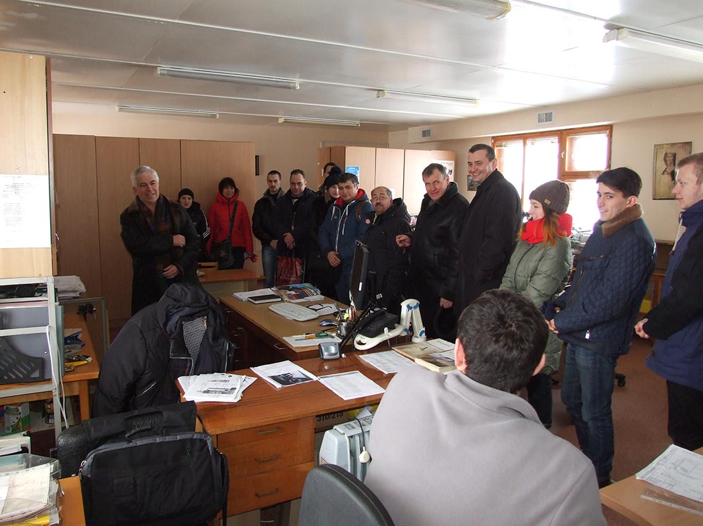

Як відомо, теорія завжди ґрунтується на практиці. Тому 20 березня учасники стартап-школи Sikorsky Challenge брали участь в екскурсії на завод автогенного обладнання «ДОНМЕТ». Її метою стало поглиблення знань у менеджменті сучасних підприємств. А запросив на екскурсію успішний підприємець, директор заводу «ДОНМЕТ» Володимир Сергієнко, який напередодні відвідав стартап-школу в ДДМА і запропонував учасникам ознайомитися зі школою реального бізнесу.
Учасники стартап-школи оглянули підприємство. Причому ознайомилися з усіма цехами – від етапу отримання заготовок до комплектації готової продукції. Познайомилися з контролем якості продукції. Побували у відділах, де народжуються кресленики нової апаратури й розроблюються процеси її виготовлення із заданими параметрами якості.
Інтересна й досить тривала бесіда пройшла в залі для конференцій підприємства. Володимир Сергієнко розповів про свої перші кроки в бізнесі, про те, як початківцю сформулювати мету свого підприємства, чим стартап відрізняється від бізнесу й багато іншого. Він запропонував стартапівцям відвідувати його канал в YouTube, де надається корисна інформація для початківців. Адреса знаходиться на фото.